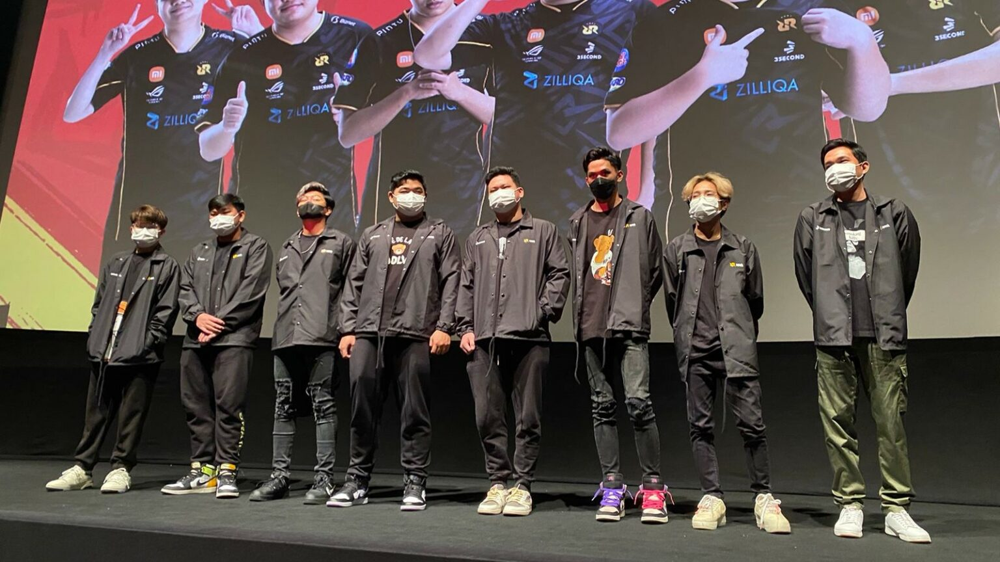
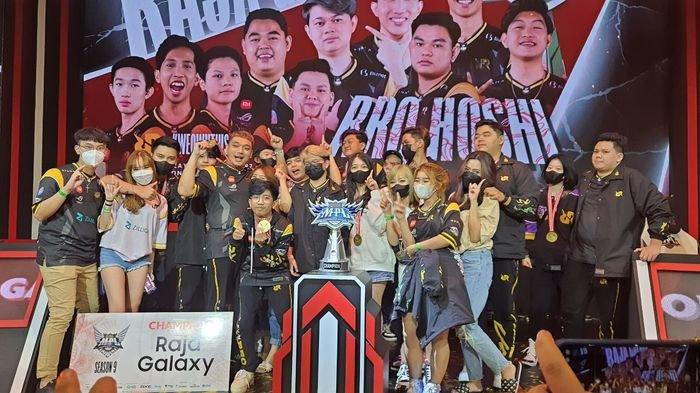

Sejarah

Rex Regum Qeon atau yang lebih dikenal dengan RRQ merupakan klub e-sports asal Indonesia yang menaungi 6 divisi game, yaitu Mobile Legends: Bang Bang, PUBG Mobile, Free Fire, Valorant, dan Pokémon Unite. Didirikan sejak 2013, Rex Regum Qeon telah memenangkan lebih dari 200 turnamen esports nasional maupun internasional.Nama Rex Regum berasal dari bahasa Latin yang berarti ‘raja dari segala raja’ atau ‘king of kings’, sedangkan Qeon merupakan nama in game Presiden Direktur Team RRQ, Riki K. Suliawan
Prestasi

Saat ini, Rex Regum Qeon telah memiliki 8 tim dari 6 divisi dengan lebih dari 40 atlet yang tergabung tak hanya di Indonesia, tetapi juga di Thailand. Salah satu tim dari divisi PUBG Mobile, RRQ Oracle, berbasis di Thailand. Sementara itu, 8 tim lainnya berbasis di Jakarta, Indonesia.
Pada 2017, Rex Regum Qeon pernah bekerja sama dengan Paris Saint-Germain[4] dalam membentuk tim Mobile Legends bernama PSG RRQ yang turut serta dalam MPL Indonesia Season 3. Di dunia esports Mobile Legends, Rex Regum Qeon telah menjuarai 4
turnamen, yaitu MPL Indonesia Season 2 (2018),[5] MPL Indonesia Season 5 (2020),[6] MPL Indonesia Season 6 (2020),[7] dan MPL Indonesia Season 9
Rex Regum Qeon dipimpin oleh Andrian Pauline di kursi CEO sejak 2017, ketika Team RRQ bergabung dengan MidPlaza Holding. Hingga kini, Rex Regum Qeon telah 4 kali juara lokal yang dapat dilihat di jersey atau seragam resmi Team RRQ.
Pertama, dari divisi Point Blank, RRQ Endeavor menyumbang satu bintang setelah menjuarai Point Blank International Championship (PBIC) 2017. Kedua, RRQ Athena yang merupakan tim PUBG Mobile asal Thailand, menyumbang satu bintang pada 2018 dari turnamen PUBG Mobile Star Challenge. Ketiga, dari RRQ Epic di divisi Point Blank, memenangkan Point Blank Word Championsip 2019 Rusia. Keempat, RRQ Athena bersama RRQ Kenboo juga kembali memenangkan PUBG Mobile Star Challenge 2019.
Pada 2020, Rex Regum Qeon memenangkan berbagai penghargaan bagi pelaku industri esports Indonesia. Rex Regum Qeon menjadi Pro Team Esports Terfavorit di Indonesian Esports Awards 2020. Rex Regum Qeon juga terpilih menjadi The Most Favorite Esports Team of the Year di Indonesia Gaming Awards 2020 serta sebagai Esports Team of the Year dalam Supergamer Fest 2020.